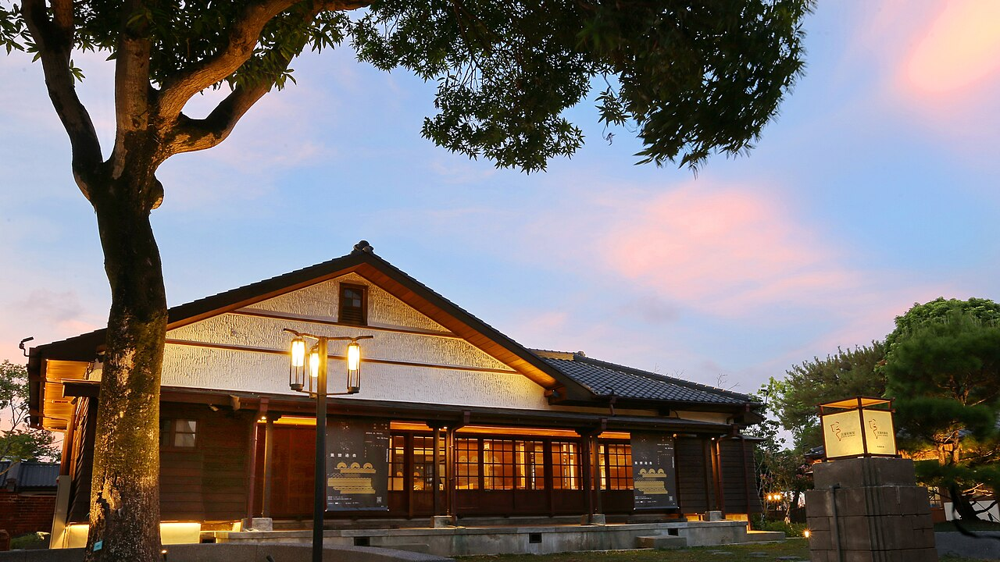

DAY 1 · 12/25（五）
抵達花蓮，入住後慢逛老屋再去夜市
先在車站吃午餐、到飯店放下行李，下午只安排將軍府 1936 的市區散步，晚上再一起去東大門吃晚餐。
火車、午餐座位與兩台計程車仍待確認
今日時間軸
去程車次與午餐座位待確認8 人以兩台計程車與步行為主若雨大或疲累，省略將軍府；晚餐依天候決定是否逛夜市
- 台北出發
目標搭直達花蓮的自強號；實際車次等台鐵開放訂票後確認。 - 飯店休息／使用設施
不加塞景點，保留抵達日緩衝。 - Malcolm Koo · CC BY-SA 4.0 · 裁切呈現